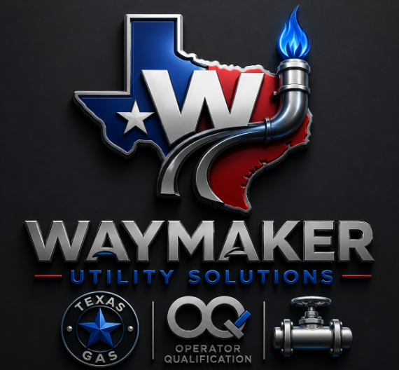

Gas & Utility Contracting — Fort Worth, TXA founder-led utility contracting team built on field-tested pipeline expertise and bilingual compliance management — so your crews stay qualified and your projects stay on schedule.
Waymaker Utility Solutions is a founder-operated gas and utility contracting company based in Fort Worth. We were built around a simple idea: the companies who hire utility contractors don't just need pipe in the ground — they need a partner who bids accurately, keeps crews qualified, and communicates clearly the whole way through.
Our team combines hands-on pipeline estimating and inspection experience with dedicated, bilingual compliance management — so nothing falls through the cracks between the bid and the final inspection.
No layers between you and the people bidding and running your project.
OQ requirements taught and tracked in the language your crew works in.
Estimating grounded in real field experience, not guesswork.
A lean team means fewer handoffs and quicker turnaround.
Whether it's a bid, an inspection, or getting your crew's OQs current — reach out and we'll get back to you directly.